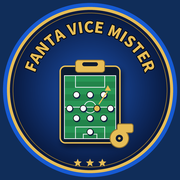

Fanta Vice Mister per Mac
Versione 1.3.6 rev. 3 · app per Mac con macOS 12 o successivo, stesse funzioni della versione Windows.
1. Scarica
Il download funziona con qualsiasi browser: Safari, Chrome, Firefox o altri. Il file finisce nella cartella Download.
Scegli il file adatto al tuo Mac: menu › Informazioni su questo Mac. Se alla voce Chip leggi «Apple M1», «M2», «M3», «M4»… scegli il primo pulsante; se alla voce Processore leggi «Intel» scegli il secondo.
Mac con chip Apple (M1, M2, M3, M4…) Mac con processore Intel• Intel: collaudata su macOS (installazione dal file .dmg, avvio, Home, Area Admin), firma e file verificati.
• Chip Apple: compilata e verificata (firma, architettura, integrità del file .dmg), con lo stesso identico codice della versione Intel, ma non ancora avviata su un Mac con chip Apple. Se qualcosa non va, segnalalo all'Admin: nel frattempo puoi usare la versione Intel, che sui Mac con chip Apple funziona tramite Rosetta (macOS la propone al primo avvio).
Controllo dei file (SHA-256)
Intel (.dmg): 9de65e5b4fee9618d5107d663aab040b27fc2d717bd96169a628e2779c0a16f9
Nel Terminale:
shasum -a 256 ~/Downloads/FantaViceMister-Mac-*.dmg2. Installa
- Apri il file .dmg scaricato.
- Trascina Fanta Vice Mister nella cartella Applicazioni.
- Espelli il disco «Fanta Vice Mister» (icona nel Finder).
3. Primo avvio
L'app è gratuita e non ha la firma a pagamento di Apple: al primo avvio macOS la blocca e mostra un avviso. È normale. Prima controlla la provenienza: il file deve essere stato scaricato da questa pagina ufficiale (indirizzo fabrizioercole70.github.io/FantaViceMister, download da github.com/fabrizioercole70/FantaViceMister). Poi fai così, una sola volta:
- Apri Fanta Vice Mister da Applicazioni: compare l'avviso; premi Fine (o OK).
- Apri Impostazioni di Sistema › Privacy e sicurezza.
- Scorri in basso: accanto a «Fanta Vice Mister è stato bloccato» premi Apri comunque e conferma con la password del Mac.
Dai successivi avvii l'app si apre normalmente. Scarica il file solo da questa pagina ufficiale.
4. Accesso e utilizzo
- Si apre la pagina ufficiale di Leghe Fantacalcio: entra con username e password di Fantacalcio. Le credenziali restano sui siti ufficiali; l'accesso resta attivo ai prossimi avvii.
- Il bottone tondo FVM sul bordo destro apre la Home: CAMBIA LEGA, formazione e panchina con lo switch dei calciatori, invio LEGA + FLE, SOLO LEGA o SOLO FLE, consegne ufficiali, storico invii e Area Admin.
- A finestra grande la Home si dispone su due colonne; se la rimpicciolisci torna su una colonna.
- Copia e incolla con ⌘C / ⌘V (anche ⌘X e ⌘A). Il menu Fanta Vice Mister in alto offre Indietro, Ricarica, Leghe Fantacalcio e Fantaclub.
- CHIUDI nella Home esce dall'account e chiude l'app; lo storico resta sul Mac.
Aggiornamenti
All'avvio l'app controlla da sola se esiste una versione più recente. Quando esce, nella Home compare AGGIORNAMENTO DISPONIBILE con le novità. AGGIORNA ORA chiede conferma e apre questa pagina nel browser (sul Mac l'app non si sostituisce da sola): scarica il nuovo file e trascina l'app in Applicazioni scegliendo Sostituisci. Accesso, impostazioni e storico restano sul Mac. Dopo la sostituzione può essere necessario ripetere una volta «Apri comunque».